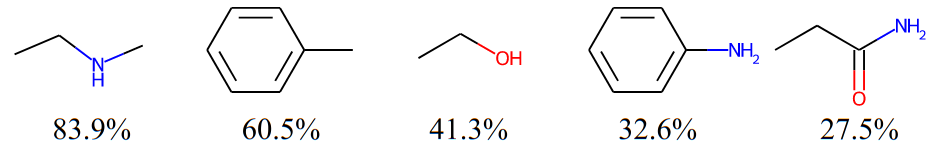
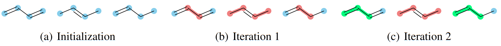
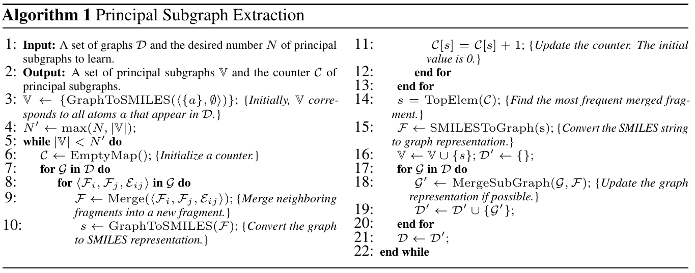
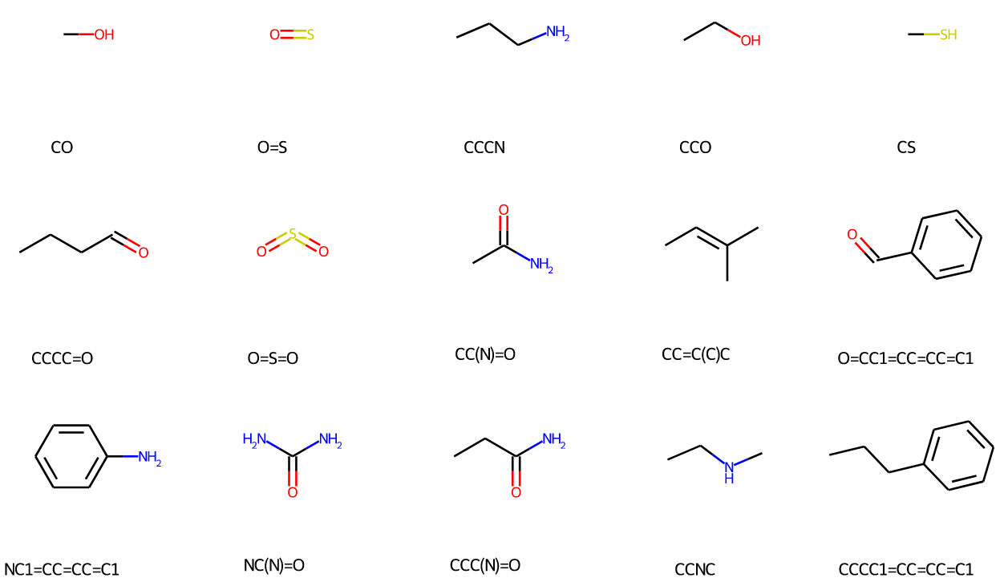
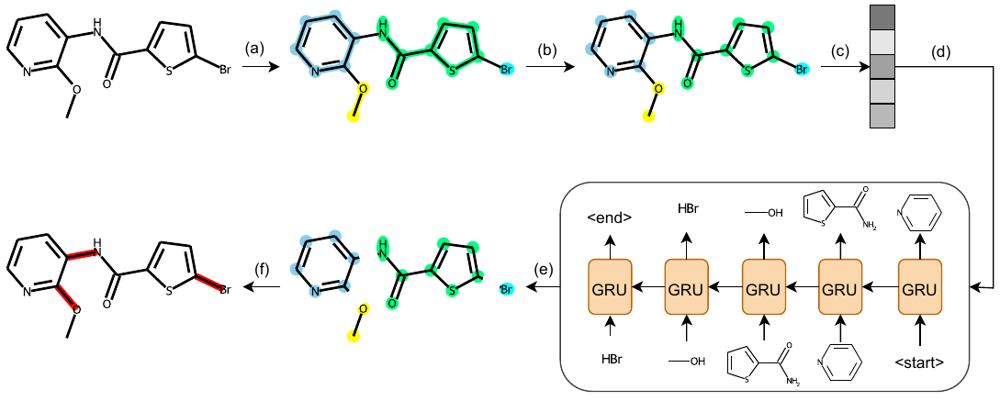
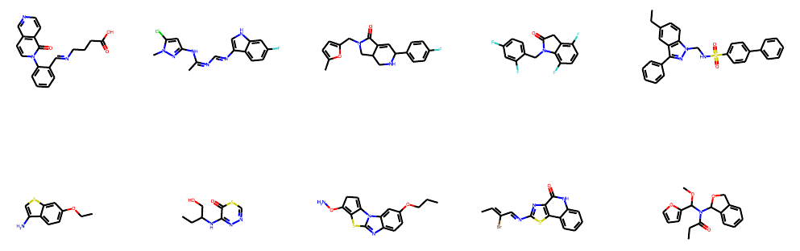
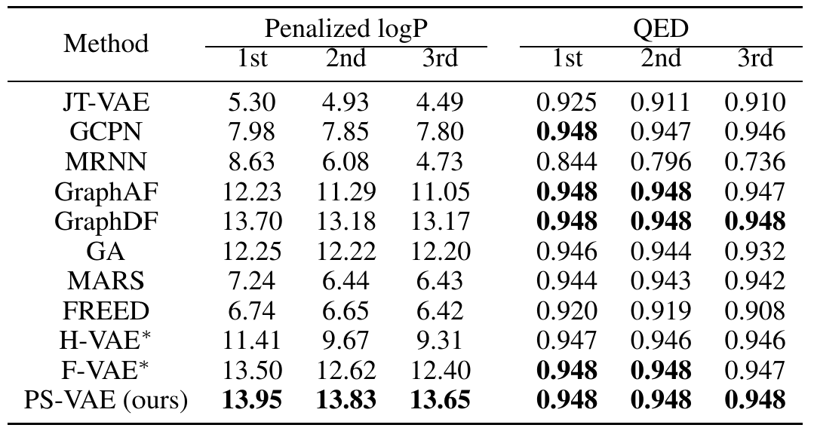
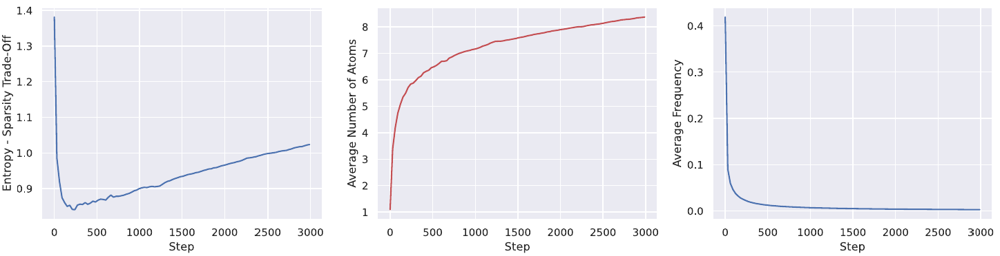
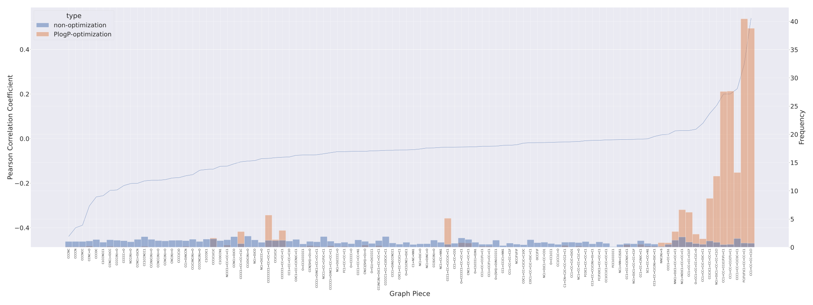

This is a blog for our paper Molecule Generation by Principal Subgraph Mining and Assembling which is accepted by NeurIPS 2022. Molecule generation is critical for various applications in domains like drug discovery and material science. Current attention has been paid to generating molecular graphs based on subgraphs. However, there are two critical problems in existing subgraph-level generation methods. First, these methods usually construct the vocabulary of subgraphs with external chemical libraries (Yang et al., 2021) or with hand-crafted rules (Jin et al., 2020). From the perspective of data science, these subgraphs are not designed to capture the combination patterns of atoms and bonds in molecules. The second problem is that they assemble the subgraphs in a sequential manner, which focuses mostly on the local arrangement. To tackle the above problems, we propose a novel notion, principal subgraph, along with an theoretically efficient algorithm to extract them to construct the vocabulary. We further propose a two-step generation framework which first generate a sequence of subgraphs and then globally assemble them into a molecule.
Principal Subgraph
There are some patterns in molecules. For example, below are five subgraphs that frequently occurs in the ZINC250K dataset, each of which is labeled with the ratio of molecules containing it at the bottom:

Intuitively, using these frequent subgraphs for generation helps the model better capture the complicated distribution of molecular graphs. Moreover, some frequent subgraphs are closely related to molecular properties (the most common example will be functional groups). Therefore, using them for generation may also improve the ability of the model to optimize molecular properties. And here comes the question: how to discover them from a given set of molecules? We know that frequent subgraph mining is an NP-hard problem so that we cannot just simply enumerate all possible subgraphs and sort them by frequencies. Fortunately, we propose an approximate solution to avoid the unaffordable efficiency problem while still ensuring the quality of the extracted subgraphs. To introduce our solution, we need to first define a novel and powerful notion: Principal Subgraph (PS).
What is Principal Subgraph
A molecule can be represented as a graph \(\mathcal{G} = \langle \mathcal{V}, \mathcal{E} \rangle\), where \(\mathcal{V}\) is a set of nodes corresponding to atoms and \(\mathcal{E}\) is a set of edges corresponding to chemical bonds. A subgraph of \(\mathcal{G}\) can be seen as \(\mathcal{S}=\langle\tilde{\mathcal{V}}, \tilde{\mathcal{E}} \rangle\subseteq\mathcal{G}\), were \(\tilde{\mathcal{V}} \subseteq \mathcal{V}\) and \(\tilde{\mathcal{E}} \subseteq \mathcal{E}\). We say subgraph \(\mathcal{S}\) spatially intersects with subgraph \(\mathcal{S}'\) if there are certain atoms in a molecule belong to both \(\mathcal{S}\) and \(\mathcal{S}'\), denoted as \(\mathcal{S}\cap\mathcal{S}'\neq\emptyset\). Note that if two subgraphs look the same (with the same topology), but they are constructed by different atom instances, they are not spatial intersected. As mentioned before, The frequency of a subgraph occurring in all molecules of a given dataset measures its repeability and epidemicity, which should be an important property. Formally, we define the frequency of a subgraph \(\mathcal{S}\) as \(c(\mathcal{S})=\sum_{i} c(\mathcal{S}|\mathcal{G}_i)\) where \(c(\mathcal{S}|\mathcal{G}_i)\) computes the occurrence of \(\mathcal{S}\) in a molecule \(\mathcal{G}_i\). Without loss of generality, we assume all molecules and subgraphs we discuss are connected.
With the aforementioned notations, we can give the definition of Principal Subgraph. We call subgraph \(\mathcal{S}\) a principal subgraph, if any other subgraph \(\mathcal{S}'\) that spatially intersects with \(\mathcal{S}\) in a certain molecule satisfies either \(\mathcal{S}'\subseteq \mathcal{S}\) or \(c(\mathcal{S}') \leq c(\mathcal{S})\).
The definition might be a little tricky, but in naturally language the definition means that amongst all subgraphs of the larger frequency, a principal subgraph basically represents the largest repetitive pattern in size within the data. It is desirable to leverage patterns of this kind as the building blocks for molecule generation since those subgraphs with a larger size than them are less frequent/reusable. Next, we will propose an algorithm to extract principal subgraphs for generation.
How to Extract Principal Subgraphs
We have defined the concept of spatially intersects beforehand. Similarly, we can define sptially union as follows: if two subgraphs \(\mathcal{S}\) and \(\mathcal{S}'\) appear in the same molecule, we call their spatially union subgraph as \(\mathcal{U=\mathcal{S}\bigcup\mathcal{S}}'\), where the nodes of \(\mathcal{U}\) are the union set of \(\tilde{\mathcal{V}}\) and \(\tilde{\mathcal{V}}'\), and its edges are the union of \(\tilde{\mathcal{E}}\) and \(\tilde{\mathcal{E}}'\) plus all edges connecting \(\mathcal{S}\) and \(\mathcal{S}'\). We call each subgraph that is put into the vocabulary as a fragment for clearer representation. We generate all fragments via the following stages:
- Initialization. We first decide the size of the vocabulary as \(N\). The vocabulary \(\mathbb{V}\) is initialized with all unique atoms (subgraph with one node). Namely, all atoms are included in the vocabulary.
- Merge. For every two neighboring fragments \(\mathcal{F}\) and \(\mathcal{F}'\) in the current vocabulary, we merge them by deriving the spatial union \(\mathcal{F}\bigcup\mathcal{F}'\). Here, the neighboring fragments of a given fragment \(\mathcal{F}\) in a molecule is defined as the ones that contain at least one first-order neighbor nodes of a certain node in \(\mathcal{F}\).
- Update. We count the frequency of each identical merged subgraph in the last stage. We choose the most frequent one as a new fragment in the vocabulary \(\mathbb{V}\). Then, we go back to the merge stage until the vocabulary size reaches the predefined number \(N\).
Each subgraph can be seen as a small molecule, therefore we can translate subgraphs into SMILES to transform the graph matching problem into string matching problem.
Here we present an example of implementing the algorithm on a toy dataset of three molecules: \(\texttt{C=CC=C}\), \(\texttt{CC=CC}\), \(\texttt{C=CCC}\). At the Intialization stage, we simply define \(N=3\), which means that we want to construct a vocabulary \(\mathbb{V}\) of three subgraphs. Then all unique atoms in the dataset are included in \(\mathbb{V}\), namely \(\mathbb{V} = \{\texttt{C}\}\). We can see from figure (a) that each molecule is represented as a set of connected \(\texttt{C}\). Next, we enter the Merge phase. It is obvious that all spatial unions in figure (a) include \(\texttt{CC}\) and \(\texttt{C=C}\). Then in the Update stage, by counting the frequencies of spatial unions in figure (a), we have \(c(\texttt{CC}) = 5\) and \(c(\texttt{C=C}) = 4\). Therefore we have the most frequent pattern "two \(\texttt{C}\) connected by a single bond", namely \(\texttt{CC}\), included in the vocabulary and merge all the patterns in the dataset. By doing this, we can see in figure (b) that all carbon pairs connected by a single bond is marked in red, which means the two carbons are merged into a single node of fragment. One exception occurs at the third molecule where the 3rd and 4th carbons are not merged. This is because the 3rd carbon is already merged into the same node with the 2nd carbon. It is also reasonable if the 2nd carbon is left alone instead of the 4th carbon. We actullay randomly select one pair to merge if such overlap happens. This might introduce some ambiguity into the algorithm, but we will prove later that our algorithm can tolerate such ambiguity to some extent.

Let's get back to the construction of the vocabulary. Now we have \(\mathbb{V} = \{\texttt{C}, \texttt{CC}\}\) and forward to the Merge phase again. From figure (b) we know the spatial unions in the three molecules are \(\{\texttt{C=CC}\}\), \(\{\texttt{CC=CC}\}\), and \(\{\texttt{C=CC}, \texttt{CCC}\}\), respectively. Note that \(\texttt{CC=C}\) is equivalent to \(\texttt{C=CC}\) and will always be presented as the latter notion, which is ensured by the uniqueness of canonical SMILES. In the Update phase we have \(c(\texttt{C=CC}) = 3\), \(c(\texttt{CC=CC}) = 1\), and \(c(\texttt{CCC}) = 1\). Therefore \(\texttt{C=CC}\) is included in \(\mathbb{V}\) and merged. Now we have \(\mathbb{V} = \{\texttt{C}, \texttt{CC}, \texttt{C=CC}\}\) and the size of the vocabulary has reached the predefined \(N\), so the algorithm stops. For each loop, we also record the frequency of the newly generated fragment, which will be used for subgraph-level decomposition illustrated in the next section.
Below is the pseudo code for the above algorithm:

The proposed algorithm enjoys the following properties, which ensure its efficacy:
- Monotonicity: The frequency of the non-single-atom fragments in \(\mathbb{V}\) decreases monotonically, namely \(\forall \mathcal{F}_i, \mathcal{F}_j \in \mathbb{V}, c(\mathcal{F}_i) \leq c(\mathcal{F}_j)\), if \(i \geq j\).
- Significance: Each fragment \(\mathcal{F}\) in \(\mathbb{V}\) is a principal subgraph.
- Completeness: For any principal subgraph \(\mathcal{S}\) arising in the dataset, there always exists a fragment \(\mathcal{F}\) in \(\mathbb{V}\) satisfying \(\mathcal{S} \subseteq \mathcal{F}, c(\mathcal{S}) = c(\mathcal{F})\), when \(\mathbb{V}\) has collected all fragments with frequency no less than \(c(\mathcal{S})\).
These conclusions are interesting and valuable. Monotonicity ensures that the subgraphs with higher frequencies are always extracted before those with lower frequencies. This is important because subgraphs with higher frequencies are more likely to reflect the frequent patterns and should be included into the vocabulary earlier. Significance indicates that each extracted subgraph is a principal subgraph that basically represents the “largest” repetitive pattern in size within the data. Completeness means our algorithm is expressive enough to represent (at least contain) any potential principal subgraph. For proof of these conclusions, please refer to our paper.
Let's take a look back at the example of toy dataset. Even if the previously mentioned ambiguity happened and the 3rd and 4th carbons are merged in the third molecule, the final vocabulary will include a fragment which equals to or contains \(\texttt{C=CC}\), which is ensured by the Completeness. Specifically, in this case the \(\texttt{C=CC}\) will still be extracted.
We provide some PS from the vocabulary constructed from ZINC250K and visualize them below. We found the constructed vocabulary really captures patterns in the dataset.

Subgraph-level Decomposition
Now we have defined principal subgraph and proposed an efficient algorithm to extract them. The only remaining question is that how do we represent a molecule with the constructed vocabulary. By saying "represent a molecule" we mean decompose the molecule into the subgraphs in the given vocabulary. A decomposition of a molecule \(\mathcal{G}\) is derived as a set of non-overlapped subgraphs \(\{\mathcal{S}_i\}_i^n\) and the edges connecting them \(\{\mathcal{E}_{ij}\}_{i,j}^{n,n}\), if \(\mathcal{G}=(\bigcup_i^n \mathcal{S}_i) \bigcup (\bigcup_{i,j}^{n,n}\mathcal{E}_{ij})\) and \(\mathcal{S}_i\cap\mathcal{S}_j=\emptyset\) for any \(i\neq j\). One important merit of our algorithm is that it can be reused for subgraph-level decomposition! For example, in figure (c) of the above example, when the algorithm stops, all the molecules in the dataset are already decomposed into subgraphs in the vocabulary (e.g. \(\texttt{C=CC=C}\) now consists of two connected nodes, \(\texttt{C=CC}\) and \(\texttt{C}\)). For an arbitrary molecule outside the dataset, we can also decompose it following the the same procedure as the extraction, except that in the Update stage the frequencies are obtained from those recorded in the vocabulary.
Two-step Generation
With the vocabulary of subgraphs, we generate molecules in two steps: first predicting which subgraphs should be selected and than assembling them globally. We use VAE-based generation framework and the overview of our model is depicted in the figure below:

The encoding of molecular graphs into latent variables can be obtained by an arbitrary graph neural network. We use GIN (Xu et al. 2019) in our paper. We want to emphasize that the subgraph-level information is integrated into the model by adding a fragment embedding to the atom nodes according to which subgraph they are in. Since the vocabulary consists of principal subgraphs in our paper, we name this generation framework as PS-VAE.
Generation of Subgraphs
Given a latent variable variable \(\mathbf{z}\), we first utilize an autoregressive sequence generation model (i.e. GRU in our paper) to decode a sequence of fragments \([\mathcal{F}_1, ..., \mathcal{F}_n]\). The fragment set is should not be ordered, therefore we shuffle the set during training to let our model learn the permutation invariance. Similar to the conventions in Natural Language Processing, we insert two special tokens "\(\langle \texttt{start} \rangle\)" and "\(\langle \texttt{end} \rangle\)" at the begin and the end of the fragment sequence. During the inference stage, the sequence model stops generation when a "\(\langle \texttt{end} \rangle\)" is generated.
Global Assembling of Subgraphs
The generated fragment set can be seen as a disconnected molecular graph where bonds between the subgraphs are missing. We formalize bond completion as a link prediction task which is familiar to the GNN community. Specifically, we implement message passing on the atom-level incomplete graph. Then, given node \(v\) and \(u\) in two different subgraphs, we predict the bonc between the two atoms as follows: \[ P(e_{uv}|\mathbf{z}) = H_\theta([\mathbf{h}_v;\mathbf{h}_u;\mathbf{z}]) \] where \(H_\theta\) is a 3-layer MLP with ReLU activation and \(\mathbf{h}_{u/v}\) is the node embedding of \(u/v\) after message passing. We add a special type "\(\langle \texttt{none} \rangle\)" to indicate there is no bond between the two atoms. During training, we use negative sampling to balance the ratio of none bond and other bonds. During inference, we first sort the predicted edge in descending order in terms of \(P(e_{uv})|\mathbf{z}\), then we try to add them into the graph in turn. Those edges which will induce violation of valency rules will be dropped. Finally we find the maximal connected component as the final results.
We visualize some generated molecules below:

Property Optimization
In real scenarios concerning molecule generation, we usually need to generate molecules with optimized properties. We consider the setting where the property score can be given by some black-box scorers (e.g. computational methods, efficient wetlab methods, ...). We first train a predictor on the latent space of our PS-VAE to simulate the given scorers. Then we perform gradient ascending on the latent space to search for an optimized latent variable that gives high predicted property score, which shows promise for decoding into an optimized molecule. We conduct experiments on two widely used properties: Penalized logP and QED:

Please refer to our paper for more experimental results and detailed descriptions.
Analysis
Proper Size of Vocabulary
A larger \(N\) (i.e. larger steps before the algorithm ends) in the principal subgraph extraction process leads to an increase in the number of atoms in extracted fragments and a decrease in their frequency of occurrence, as illustrated in the 2nd and 3rd figure below. These two factors affect model performance in opposite ways. On the one hand, the entropy of the dataset decreases with more coarse-grained decomposition, which benefits model learning. On the other hand, the sparsity problem worsens as the frequency of fragments decreases, which hurts model learning. Intuitively, there must be an optimal point to balance these two factors. We propose a quantified method to balance entropy and sparsity. The entropy of the dataset given a set of fragments \(\mathbb{V}\) is defined by the sum of the entropy of each fragment normalized by the average number of atoms: \[ H_{\mathbb{V}} = - \frac{1}{n_\mathbb{V}}\sum_{\mathcal{F} \in \mathbb{V}} P(\mathcal{F})\log P(\mathcal{F}), \] where \(P(\mathcal{F})\) is the relative frequency of fragment \(\mathcal{F}\) in the dataset and \(n_{\mathbb{V}}\) is the average number of atoms of fragments in \(\mathbb{V}\). The sparsity of \(\mathbb{V}\) is defined as the reciprocal of the average frequency of fragments \(f_{\mathbb{V}}\) normalized by the size of the dataset \(M\): \(S_{\mathbb{V}} = M / f_{\mathbb{V}}\). Then the entropy - sparsity trade-off (\(T\)) can be expressed as: \(T_\mathbb{V} = H_\mathbb{V} + \gamma S_\mathbb{V}\), where \(\gamma\) balances the impacts of entropy and sparsity since the impacts vary across different tasks. We assume that \(T_\mathbb{V}\) negatively correlates with downstream tasks. Given a task, we first sample several values of \(N\) to calculate their values of \(T\) and then compute the \(\gamma\) that minimize the Pearson correlation coefficient between \(T\) and the corresponding performance on the task. In this way, we can locate a proper \(N\) given any downstream tasks without burdensome tuning on the parameter. For example, the optimal \(\gamma\) of the PlogP optimization task produce a Pearson correlation lower than -0.9, indicating strong negative correlation. The curve of the trade-off is depicted in the first figure below, which shows the optimal \(N\) is approximately within the range [200, 300]. We have actually run the experiments with \(N=100, 300, 500, 700\) and found that \(N=300\) gives the best results.

Correlations Between Principal Subgraphs and Properties
We may also wonder whether there truely exists correlations between the extracted PS and molecular properties, and whether PS-VAE can discover and utilize them. To analyze this, we present the normalized distribution of generated fragments and Pearson correlation coefficient between the fragments and Penalized logP (PlogP) in the figure below:

By saying "normalized distribution" we mean the frequencies of each fragment is divided by their frequencies in the dataset. Therefore, in non-optimization settings, it is expected that each fragment has a normalized frequency of 1 because our model is supposed to fit the distribution of the dataset. This is indeed observed in the figure, where the blue bins are approximately of the same height indicating a frequency of 1. Compared with the flat distribution under the non-optimization setting, the generated distribution shifts towards the fragments positively correlated with PlogP under the PlogP-optimization setting. The generation of fragments negatively correlated with PlogP is also suppressed. Therefore, we can draw the conclusion that correlations exist between fragments and PlogP, and our model can accurately discover and utilize these correlations.
Discussion
Though we have conducted extensive experiments to validate the efficacy of principal subgraphs, they are still preliminary attempts. We think there are a lot more domains that can utilize principal subgraphs for enhancement, as well as more efforts to improve the extraction algorithm. For example, currently the subgraph-level decomposition of molecules are merely implemented on the nodes. If we can also upgrade the edges to subgraph-level, it is possible to upgrade all atom-level models to their subgraph-level counterparts with only replacement of the vocabulary. Further, domains like pretraining or property prediction on the molecules may also extract abundant information from the subgraph-level representations of molecules. To conclude, we think our work provides insights into the selection of subgraphs on molecular representations and can inspire further search in this direction.
Contact
For further discussion, please contact Xiangzhe Kong (jackie_kxz@outlook.com)